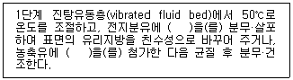

식품기사 (2014-08-17 기출문제)
1과목: 식품위생학
1. 과채류 등의 식물성 색소 고정을 위하여 사용하는 첨가물은?
- 질산나트륨
- 소명반
- 질산칼륨
- 아질산나트륨
(정답률: 65%)

2. 돼지고기의 생식으로 감염될 수 있는 기생충은?
- 십이지장충
- 회충
- 유구조충
- 무구조충
(정답률: 85%)
3. 사람이 일생동안 섭취하였을 때 현시점에서 알려진 사실에 근거하여 바람직하지 않은 영향이 나타나지 않을 것으로 예상되는 물질의 1일 섭취량을 나타낸 것은?
- ADI
- GRAS
- NOAEL
- LC50
(정답률: 81%)
4. 미생물의 살균이나 소독 방법 중 화학적 방법은?
- 여과
- 가열
- 소독약
- 자외선
(정답률: 88%)
5. 급성독성은 비교적 강하지 않으나 화학적으로 안정하여 잘 분해되지 않는 농약류는?
- 유기염소제
- 유기비소제
- 유기인제
- 유기수은제
(정답률: 62%)
6. 황색포도상구균 식중독의 특징이 아닌 것은?
- 장내독소인 enterotoxin에 의한 독소형이다.
- 잠복기는 2 ~ 6시간으로 급격히 발병한다.
- 사망률이 다른 식중독에 비해 비교적 낮다.
- 열이 39℃ 이상으로 지속된다.
(정답률: 71%)
7. 어떤 첨가물의 LD50의 값이 높을 경우 그 의미는?
- 독성이 약하다.
- 독성이 강하다.
- 보존성이 작다.
- 보존성이 크다.
(정답률: 74%)
8. 우유 중에서 많이 발견될 수 있는 aflatoxin은?
- B1
- M1
- G1
- B2
(정답률: 72%)
9. HACCP의 7원칙에 해당하지 않는 것은?
- 위험요인 분석
- 기록 보관 및 문서화 방법 설정
- 모니터링 절차 설정
- 작업공정도 작성
(정답률: 79%)
10. 된장, 고추장에 주로 사용하는 보존료는?
- 베타-나프톨(β-naphtol)
- 안식향산(benzoic acid)
- 소르빈산(sorbic acid)
- 데히드로초산(dehydro acetic acid)
(정답률: 56%)
11. 식품 중 단백질과 질소 화합물을 함유한 식품성분이 미생물의 작용으로 분해되어 악취와 유해물질을 생성하여 식품 가치를 잃어버리는 현상은?
- 발효
- 부패
- 변패
- 열화
(정답률: 84%)
12. 콜레라에 대한 설명으로 틀린 것은?
- 우리나라에서 콜레라는 식품위생법이 아닌 감염병 예방 및관리에 대한 법률에 의해 관리되고 있다.
- 콜레라의 예방은 예방접종이 가장 효과적이며 1회 예방접종으로 3년간 안심할 수 있다.
- 콜레라가 유행할 시기에 어패류의 생식은 특별히 주의할 필요가 있다.
- 콜레라는 소독약제에 약한 편이다.
(정답률: 68%)
13. 방사성 물질이 인체에 침착하여 장해를 주는 부위를 연결한것 중 가장 거리가 먼 것은?
- Cs-근육
- I-갑상선
- Co-신장
- Sr-뼈
(정답률: 70%)
14. 다음 중 보존료의 사용목적이 아닌 것은?
- 식품의 영양가 유지
- 가공식품의 변질, 부패방지
- 가공식품의 수분증발 방지
- 가공식품의 신선도 유지
(정답률: 64%)
15. 인축공통전염병이 아닌 것은?
- 광견병, 돈단독
- 브루셀라병, 야토병
- 결핵, 탄저병
- 콜레라, 이질
(정답률: 78%)
16. 식품첨가물의 정의에 대한 설명으로 적합하지 않은 것은?
- 사용목적에 따른 효과를 소량으로도 충분히 나타낼 수 있는 첨가물질
- 저장성을 향상시킬 목적의 의도적 첨가물질
- 식욕증진 목적의 첨가물질
- 포장의 적응성을 높일 목적으로 첨가하는 물질
(정답률: 70%)
17. 식품용 기구, 용기 또는 포장과 위생상 문제가 되는 성분과의관계를 나타낸 것으로 틀린 것은?
- 종이제품 - 형광염료
- 법랑피복제품 - 납
- 페놀수지제품 - 페놀
- PVC제품 - 포르말린
(정답률: 77%)
18. 분변검사로 충란을 검출할 수 없는 기생충은?
- 유극악구충
- 간흡충
- 민촌충
- 구충
(정답률: 56%)
19. 건강기능식품의 기준 및 규격에서 제품의 형태에 관한 정의로틀린 것은?
- 정제란 일정한 형상으로 압축된 것을 말한다.
- 환이란 구상으로 만든 것을 말한다.
- 편상이란 얇고 편편한 조각상태의 것을 말한다.
- 분말이란 입자의 크기가 과립제품보다 큰 것을 말한다.
(정답률: 80%)
20. 우리나라 식품위생법에서 감자, 양파 및 건조향신료 등에 사용이 허용되어 있는 방사선은?
- Co-60
- Sr-90
- I-131
- Cs-137
(정답률: 78%)
2과목: 식품화학
21. 비효소 갈변 반응의 속도에 미치는 영향이 가장 작은 것은?
- 수분함량
- pH
- 당의 종류
- 지방의 종류
(정답률: 70%)
22. 식품의 레올로지(rheology) 용어 중 소성(plasticity)에 대한 설명으로 옳은 것은?
- 힘을 가했다가 제거할 때 원상태로 돌아오는 상태
- 힘을 가했다가 제거할 때 원상태로 돌아오지 않는 상태
- 유동성에 대한 저항성
- 탄성과 점성을 함께 가지는 성질
(정답률: 86%)
23. 콜레스테롤에 대한 설명으로 틀린 것은?
- 동물의 근육조직, 뇌, 신경조직에 널리 분포되어 있다.
- 과잉 섭취는 동맥경화를 유발시킨다.
- 비타민D, 성호르몬 등의 전구체이다.
- 단백질의 일종이다.
(정답률: 82%)
24. 카라기난(carrageenan)의 주된 성분은?
- galactose, sulfate
- glucose, sulfate
- mannose, sulfate
- fructose, sulfate
(정답률: 47%)
25. 지방의 산패를 측정하는 방법과 관계가 먼 것은?
- peroxide value
- Kreis test
- TBA test
- melting point
(정답률: 77%)
26. 비타민에 대한 설명 중 틀린 것은?
- 비타민 A는 산소가 없으면 열에 대하여 안정하다.
- 비타민 B1은 pH 3.5 이하에서는 가열하여도 비교적 안정하다.
- 비타민 B2는 빛이 있는 상태에서도 비교적 열에 안정하다.
- 비타민 C는 공기가 없을 때는 열자체에 대해서 비교적 안정하다.
(정답률: 59%)
27. 변향의 발생이 가장 적은 식용유는?
- 옥수수기름
- 대두유
- 해바라기기름
- 아마인유
(정답률: 70%)
28. 사과가 숙성될 때 관찰되는 현상이 아닌 것은?
- 가용성펙틴 증가
- 유기산 증가
- 탄닌 증가
- 안토시아닌 형성
(정답률: 64%)
29. 유지의 경화공정과 트랜스지방에 대한 설명으로 틀린 것은?
- 경화란 지방의 이중결합에 수소를 첨가하여 유지를 고체화시키는 공정이다.
- 트랜스지방은 심혈관질환의 발병률을 증가시킨다.
- 식용유지류 제품은 트랜스지방이 100g당 5g 미만일 경우"0"으로 표시할 수 있다.
- 경화된 유지는 비경화유지에 비해 산화안정성이 증가하게 된다.
(정답률: 84%)
30. 식품의 주요 색소 화합물이 나머지 셋과 다른 하나는?
- 머루(wild grape)
- 산딸기(raspberry)
- 사과(apple)
- 레드비트(red beet)
(정답률: 60%)
31. 식품의 texture 특성 중 응집성(cohesiveness)의 2차적 요소가 아닌 것은?
- 파쇄성(brittleness)
- 저작성(chewiness)
- 점착성(gumminess)
- 탄성(springiness)
(정답률: 57%)
32. 관능검사의 차이식별검사방법 중 종합적 차이검사에 해당하는 방법은 무엇인가?
- 삼점검사
- 다중비교검사
- 순위법
- 평점법
(정답률: 78%)
33. 카카오 버터에 대한 설명 중 옳은 것은?
- 코코넛 종자에서 압착하여 얻어진다.
- 다른 유지에 비해 저급과 중급지방산의 조성 비율이 높다.
- 팜유와 그 특성이 매우 비슷하다.
- 팔미트산, 올레산, 스테아르산 등이 구성성분이다.
(정답률: 56%)
34. 100g 우유(수분:89%, 회분:1%, 단백질:3%, 지방질:3%,탄수화물:4%)의 열량(kcal)은 얼마인가?
- 35
- 45
- 55
- 65
(정답률: 75%)
35. 관능검사 중 가장 많이 사용되는 검사법으로 일반적으로 훈련된 패널요원에 의하여 식품시료간의 관능적 차이를 분석하는 검사법은?
- 차이식별 검사
- 향미프로필 검사
- 묘사 분석
- 기호도 검사
(정답률: 76%)
36. 다음 중 W/O형 에멀젼 식품은?
- 버터
- 우유
- 마요네즈
- 아이스크림
(정답률: 74%)
37. 무기물에 대한 설명 중 옳은 것은?
- 체내의 뼈나 치아에 주로 존재하는 불소는 충치억제에 효과가있으나 과잉 시에는 치아에 반점이 형성될 수 있다.
- 글루타티온 과산화효소(glutathione peroxidase)의 구성 성분은 요오드이다.
- 고메톡실펙틴(High methoxyl pectin)에 칼슘을 첨가하면 겔(gel)을 형성할 수 있다.
- 그린빈(green bean)을 통조림화 하는 경우에는 엽록소의 마그네슘이 색의 안정화를 유도한다.
(정답률: 66%)
38. 포도당으로 과당을 제조할 때 쓰이는 효소는?
- amylase
- pectinase
- glucose oxidase
- glucose isomerase
(정답률: 76%)
39. 과일을 저장하면서 호흡량의 Q10값과 해당온도에서의 호흡량의 차이를 비교하였다. 똑같은 조건하에서 온도를 10℃ 올린다면 가장 많은 호흡량을 보이고 있는 것은?
- Q10 = 2.2 인 것
- Q10 = 1.8 인 것
- 12℃에서 100mL/kg/h 이던 것이 22℃에서 150mL/kg/h인 것
- 14℃에서 110mL/kg/h 이던 것이 34℃에서 260mL/kg/h인 것
(정답률: 63%)
40. 과일류의 공통적 향기 성분과 거리가 먼 것은?
- 에스테르(ester)류
- 글루코시놀레이드(glucosinolate)류
- 테르펜(terpene)류
- 알코올(alcohol)류
(정답률: 46%)
3과목: 식품가공학
41. 인스턴트 전지분유의 제조공정에서 ( )에 들어갈 첨가물로 적합하지 않은 것은?

- Lecithin
- Tween 60
- Span 60
- Lactose
(정답률: 57%)
42. 차단성이 좋으며, 열수축성이 커서 햄, 소시지 등의 단위 포장에 주로 사용되는 포장 재료는?
- PP(polypropylene)
- PVC(polyvinyl chloride)
- PVDC(polvinylidene chloride)
- OPP(oriented polypropylene)
(정답률: 57%)
43. 난백분(달걀 흰자가루)의 제조법에 대한 설명 중 틀린 것은?
- 난액 중 흰자위만을 건조시켜 가루로 만든 것이다.
- 보통 8% 정도의 수분을 함유한다.
- 흰자위를 분리즉시 그대로 건조시켜야 용해도가 높고, 색도 좋아진다.
- 건조시키기 전에 발효시키면 흰자위의 분리가 용이하다.
(정답률: 59%)
44. 우유의 초고온살균법(UHT) 멸균조건은 다음 조건 중 어느 것을 선택하여야 하는가?
- 130~135℃에서 0.5~2초간
- 61~65℃에서 30분간
- 70~75℃에서 15~16초간
- 120℃에서 15분간
(정답률: 87%)
45. 다음 중 과일잼의 젤리화력이 가장 큰 pH 범위는?
- pH 4.2 ~ 6.5
- pH 3.3 ~ 4.2
- pH 2.8 ~ 3.3
- pH 1.5 ~ 2.8
(정답률: 45%)
46. 수산 건제품의 처리 방법에 대한 설명으로 틀린 것은?
- 자건품 : 수산물을 그대로 또는 소금을 넣고 삶은 후 말린 것
- 배건품 : 수산물을 저온에서 말린 것
- 염건품 : 수산물에 소금을 넣고 말린 것
- 동건품 : 수산물을 동결·융해하여 말린 것
(정답률: 73%)
47. 우유를 응고시켜 침전할 때 가장 직접적으로 관여하는 단백질은?
- αs-casein
- κ-casein
- β-lactoglobulin
- β-casein
(정답률: 70%)
48. 밀가루 단백질인 글루텐(gluten)을 구성하는 아미노산조성 중알파-나선구조(α-helix) 함량을 저하시켜 불규칙한 고차구조를 없애며 고도로 분자를 서로 엉키게하여 탄력성을부여하는 아미노산은?
- proline
- histidine
- glycine
- aspartic acid
(정답률: 58%)
49. 두부제조 시 사용되는 응고제와 두부의 특성에 대한 설명으로 틀린 것은?
- 황산칼슘은 반응이 완만하여 사용하기 편리하며 수율이 좋다.
- 염화마그네슘은 응고시간이 빠르다.
- 글루코노델타락톤은 표면을 매끄럽게 한다.
- 염화칼슘은 두부의 풍미와 맛을 좋게 한다.
(정답률: 46%)
50. 주스를 1000kg/h로 10℃에서 80℃까지 열교환 장치를 사용하여 가열하고자 한다. 주스의 비열이 3.90kJ/kg·K일 때 필요한 열에너지는?
- 300000kJ/h
- 273000kJ/h
- 233000kJ/h
- 180000kJ/h
(정답률: 66%)
51. 과일 주스 혼탁의 원인이 되는 물질로 가장 관계가 깊은 것은?
- 산
- 당
- 무기물
- 펙틴
(정답률: 81%)
52. 습량기준으로 수분함량이 80%인 사과의 수분을 건량기준의 수분함량으로 환산하면 얼마인가?
- 567%
- 400%
- 233%
- 100%
(정답률: 72%)
53. 건조식품의 저장성은 수분활성도(Aw)에 의하여 크게 영향을받는다. Aw < 0.6인 건조식품의 경우 다음 중 어떤 미생물이생육할 수 있는가?
- 대부분의 박테리아
- 대부분의 식중독 균
- Halophilic bacteria
- 효모나 곰팡이의 일부
(정답률: 76%)
54. 식물성 유지를 제조하여 수소첨가(경화) 공정을 거치면 경화유를 얻을 수 있다. 다음 중 수소첨가의 주된 목적이 아닌 것은?
- 기름의 안정성을 향상시킨다.
- 경도 등 물리적 성질을 개선한다.
- 색깔을 개선한다.
- 소화가 잘 되도록 한다.
(정답률: 70%)
55. 가열 살균에 있어서 F250이란?
- 어떤 균의 250℃에서 1분간 사멸되는 정도
- 어떤 균의 임의의 온도에서의 살균 시간
- 어떤 균의 250℉에서의 살균 시간
- 어떤 균의 일정 시간 동안에 살균되는 온도
(정답률: 62%)
56. 식육훈연의 목적과 거리가 먼 것은?
- 제품의 색과 향미 향상
- 건조에 의한 저장성 향상
- 연기의 방부성분에 의한 잡균오염 방지
- 식육의 pH를 조절하여 잡균오염 방지
(정답률: 77%)
57. 버터 제조 시 불필요한 과정은?
- 75℃에서 살균하고 5 ~ 6시간 발효시킨다.
- 교반으로 지방의 알맹이를 응집시킨다.
- 순도가 높은 소금 약 2.5%를 가하여 풍미를 향상시킨다.
- 방사선으로 다시 오염균을 살균한다.
(정답률: 78%)
58. 육류 가공 시 색소 고정에 사용되지 않는 첨가물은?
- 질산염
- 질산칼륨
- 아스코르빈산
- 인산염
(정답률: 44%)
59. 유지의 정제과정 중 탈취과정에 대한 설명으로 틀린 것은?
- 정제과정 중에 생성되는 알데하이드, 케톤 등 휘발성 성분을제거하는 공정이다.
- 경화유지, 마가린, 쇼트닝 제조에 필요 없는 공정이다.
- 감압 또는 진공하에 유지를 수증기와 접촉시켜 냄새성분을 제거한다.
- 탈취 중 여러 지방산 이성체가 생성되며 특히 천연계에 주로존재하는 cis형 지방산들이 이성화되어 trans형으로 전환될 수 있다.
(정답률: 65%)
60. 마가린 제조공정에는 있는데 쇼트닝 제조공정에 없는 공정은?
- 경화
- 혼합
- 유화
- 포장
(정답률: 55%)
4과목: 식품미생물학
61. 캠필로박터 제주니를 현미경으로 검경시 확인되는 모습은?
- 나선형 모양
- 포도송이 모양
- 대나무 마디모양
- V자 형태로 쌍을 이룬 모양
(정답률: 71%)
62. 생장에 산소가 필수적이지 않지만 산소가 있으면 더 잘 자라는 미생물은?
- 통성혐기성균
- 절대호기성균
- 미호기성균
- 절대혐기성균
(정답률: 66%)
63. 진균류의 유성포자(sexual spore)가 아닌 것은?
- 접합포자
- 분생포자
- 난포자
- 담자포자
(정답률: 61%)
64. 산소가 5% 정도인 미호기 상태에서 성장하는 세균은?
- Campylobacter spp.
- Salmonella spp.
- Clostridium botulinum
- Bacillus cereus
(정답률: 57%)
65. 부패미생물에 의한 부패산물이 아닌 것은?
- 암모니아
- 유황화합물
- 트리메탈아민
- 젖산
(정답률: 75%)
66. 식품 오염미생물 제거 혹은 증식을 저해하기 위하여 순차적이나 병행적으로 처리하여 식품의 변질을 최소화 하면서 미생물에 대한 살균력을 높이는 기술은?
- 나노기술(nano technology)
- 허들기술(hurdle technology)
- 마라톤기술(marathon technology)
- 바이오기술(biotechnology)
(정답률: 76%)
67. 60분마다 분열하는 세균의 최초 세균수가 5개 일 때 3시간 후의 세균수는?
- 40개
- 90개
- 120개
- 240개
(정답률: 78%)
68. 단백질과 RNA로 이루어진 과립 형태의 물질로서 세포의 단백질 합성에 관여하는 세포내 기관은 무엇인가?
- 세포질(cytoplasm)
- 편모(flagella)
- 메소좀(mesosome)
- 리보솜(ribosome)
(정답률: 85%)
69. 요구르트 분류 중 알코올 발효유는?
- Yoghurt
- Acidophilus milk
- Kefir
- Bioghurt
(정답률: 60%)
70. 돌연변이에 대한 설명으로 틀린 것은?
- 돌연변이의 근본원인은 DNA상의 nucleotide 배열의 변화이다.
- DNA상 nucleotide 배열의 변화는 단백질의 아미노산 배열에변화를 일으킨다.
- nucleotide에서 염기쌍 변화에 의한 변이에는 치환, 첨가,결손 및 역위가 있다.
- 번역시 어떠한 아미노산도 대응하지 않는 triplet(UAA,UAG, UGA)을 갖게 되는 변이를 nonsense 변이라 한다.
(정답률: 69%)
71. DNA의 수복기구가 아닌 것은?
- 광회복
- 제거수복
- 재조합수복
- 염기수복
(정답률: 57%)
72. 병족세포를 가지는 곰팡이 속은?
- Rhizopus 속
- Aspergillus 속
- Penicillium 속
- Monascus 속
(정답률: 51%)
73. 다음 중 미생물의 아미노산 생합성과 관계 없는 효소는?
- Glutamic dehydrogenase
- Isocitrate lyase
- Aspartase
- transaminase
(정답률: 46%)
74. 발효미생물의 생육곡선에서 정상기가 형성되는 이유가 아닌것은?
- 대사산물의 축적
- 포자의 형성
- 영양분의 고갈
- 수소이온 농도의 변화
(정답률: 53%)
75. 생균수를 측정하는 방법으로 적합한 것은?
- 건조 균체량의 평량
- 비탁법
- 균체질소량법
- 평판계수법
(정답률: 76%)
76. 병원성 대장균 O157:H7의 발병양식에 따른 분류로 적합한 것은?
- 장관병원성대장균(EIEC)
- 장관독소원성대장균(EPEC)
- 장관출혈성대장균(EHEC)
- 장관부착성대장균(EAEC)
(정답률: 76%)
77. 정상발효젖산균(homofermentative lactic acid bacteria)이란?
- 당질에서 젖산만을 생성하는 것
- 당질에서 젖산과 탄산가스를 생성하는 것
- 당질에서 젖산과 CO2, 에탄올과 함께 초산 등을 부산물로 생성하는 것
- 당질에서 젖산과 탄산가스, 수소를 부산물로 생성하는 것
(정답률: 71%)
78. 다음 중 그람염색시 자주색을 나타내는 균은?
- 리스테리아균
- 캠필로박터균
- 살모넬라균
- 장염비브리오균
(정답률: 54%)
79. 균사에 격벽이 있는 것은?
- Mucor mucedo
- Rhizopus delemar
- Rhizopus nigricans
- Aspergillus oryzae
(정답률: 59%)
80. 세균의 파지(phage)에 대한 설명으로 틀린 것은?
- 발효액을 평판한천배양하면 투명한 plaque를 형성해서 식별된다.
- 파지는 세균을 이용한 cheese, amylase 발효 등에 의해 오염된다.
- 세균을 이용한 발효탱크에 파지가 오염되면 발효액이 혼탁성을 띤다.
- 파지는 세균을 이용한 acetone-butanol, inosinic acid 발효공업 등에서 발생한다.
(정답률: 43%)
5과목: 생화학 및 발효학
81. 우리 몸에서 핵산의 가수분해에 의해 생산되는 유리뉴클레오티드(free nucleotide)의 대사에 관련된 내용으로 옳은 것은?
- 분해되어 모두 소변으로 나간다.
- 일부 분해되어 소변으로 나가고 나머지는 회수반응(Salvage pathway)에 의해 다시 핵산으로 재합성된다.
- 회수반응에 의해 전부 다시 핵산으로 재합성된다.
- 유리 뉴클레오티드는 항상 일정수준량만 존재하므로 평형을이루기 때문에 대사와 무관하다.
(정답률: 82%)
82. 요소회로(Urea cycle)에 관여하지 않는 아미노산은?
- 오르니틴(ornithine)
- 아르기닌(arginine)
- 글루타민산(glutamic acid)
- 시트룰린(citrulline)
(정답률: 68%)
83. 알코올 발효에 있어서 전분증자액에 균을 배양하여 당화와 알코올 발효가 동시에 일어나게 하는 방법은?
- 액국코지법
- 아밀로법
- 밀기울 코지법
- 당밀의 발효
(정답률: 75%)
84. 산당화법의 이점이 아닌 것은?
- 당화시간이 짧다.
- 당화액이 투명하다.
- 증류가 편리하다.
- 발효율이 증가한다.
(정답률: 52%)
85. 맥주 제조 시 후발효의 목적과 관계없는 것은?
- 맥주의 고유색깔을 진하게 착색시킨다.
- 발효성 당분을 발효시켜 CO2를 생성한다.
- 저온에서 CO2를 필요한 만큼 맥주에 녹인다.
- 맥주의 혼탁물질을 침전시킨다.
(정답률: 56%)
86. 광합성의 암반응(calvin reaction)으로부터 포도당이 합성될때 관련된 중간산물이 아닌 것은?
- 3-phosphoglycerate
- xylose-5-phosphate
- ribulose-1,5-diphosphate
- glyceraldehyde-3-phosphate
(정답률: 59%)
87. 효소반응에 대한 설명으로 옳은 것은?
- 금속이온은 보조효소가 될 수 없다.
- 효소의 활성부위에 저해제는 결합할 수 없다.
- 반응생성물이 많아질수록 반응속도가 빨라진다.
- Km(Michaelis 상수) 값이 낮을수록 기질 친화력이 강하다.
(정답률: 76%)
88. DNA에 관한 설명 중 틀린 것은?
- DNA의 nucleotide는 2-deoxyribose로 구성되며 퓨린 염기인 thymine과 cytosine을 포함한다.
- DNA 이중 나선 내의 염기는 서로 3.4Å의 거리를 가지고 있다.
- A-T 염기쌍 함량이 많은 DNA는 G-C 함량이 많은 DNA보다 더 낮은 융점(Tm)을 갖는다.
- 이중나선 DNA는 열과 극단의 pH에 의해 변성되나 DNA분자 내의 공유결합은 끊어지지 않는다.
(정답률: 48%)
89. 어떤 DNA 단편의 염기 농도가 A=991개, G=456개 일 때 G+C의염기의 개수는?
- 912
- 1447
- 1535
- 1982
(정답률: 80%)
90. 미토콘드리아에서 진행되는 전자전달계에서 ATP가 합성될 때수소의 최종 공여체와 수용체의 연결이 옳은 것은?
- cytochrome c - H2
- cytochrome aa3 - O2
- cytochrome b - H2O
- cytochrome c1 - O3
(정답률: 57%)
91. 비타민C 생산과 관계있는 발효과정은?
- bifidus 발효
- propionic acid 발효
- acetone - butanol 발효
- sorbose 발효
(정답률: 57%)
92. 가수분해 에너지가 가장 큰 인산화합물은?
- phosphoenolpyruvate
- 1,3-diphosphoglycerol phosphate
- phophocreatine
- ATP
(정답률: 41%)
93. 효소의 고정화 방법에 대한 설명으로 틀린 것은?
- 담체결합법은 공유결합법, 이온결합법, 물리적 흡착법이 있다.
- 가교법은 2개 이상의 관능기를 가진 시약을 사용하는 방법이다.
- 포괄법에는 격자형과 클로스링킹형이 있다.
- 효소와 담체간의 결합이다.
(정답률: 56%)
94. 설탕, 당밀, 전분, 전분 찌꺼기 또는 포도당을 원료로 하여구연산을 제조할 때 사용되는 미생물은?
- Aspergillus niger
- Streptococcus lactis
- Rhizopus delemar
- Saccharomyces cerevisiae
(정답률: 67%)
95. 다음 중 셀로바이오스(cellobiose)를 구성단위로 하는 것은?
- 전분
- 글리코겐
- 이눌린
- 섬유소
(정답률: 70%)
96. 탄화수소에서의 균체생산의 특징이 아닌 것은?
- 높은 통기조건이 필요하다.
- 발효열을 냉각하기 위한 냉각 장치가 필요하다.
- 당질에 비해 균체 생산 속도가 빠르다.
- 높은 교반조건이 필요하다.
(정답률: 55%)
97. Fusel oil의 주요 성분이 아닌 것은?
- isoamyl alcohol
- isobutyl alcohol
- methyl alcohol
- n-propyl alcohol
(정답률: 74%)
98. Homo 젖산 발효와 관계없는 것은?
- glucose → 2 lactic acid
- Lactobacillus bulgaricus
- Lactobacillus delbrueckii
- glucose → lactic acid + ethanol + CO2
(정답률: 63%)
99. 방향족 아미노산(aromatic amino acid) 계열이 아닌 아미노산은?
- 히스티딘(histidine)
- 페닐알라닌(phenylalanine)
- 티로신(tyrosine)
- 트립토판(tryptophan)
(정답률: 51%)
100. TCA회로에 관여하는 조절효소(pacemaker enzyme)와 가장 거리가 먼 것은?
- citrate synthase
- isocitrate dehydrogenase
- α-ketoglutarate dehydrogenase
- phosphoglucomutase
(정답률: 59%)